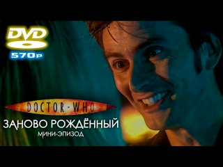
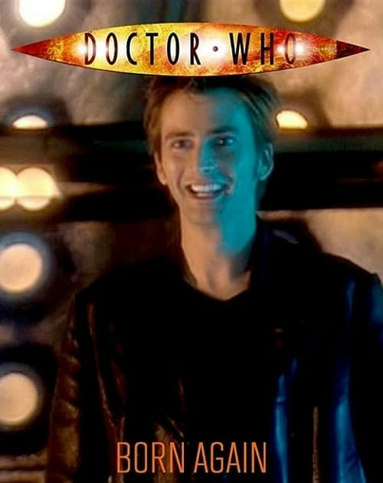

* DVO PARUSSKI
Возможно и другие. Смотрите по инструкции

Born Again
мини-эпизод для шоу "Дети в нужде"
18 ноября 2005
Формат: 7-минутный эпизод
| Варианты озвучек: | * MVO TVShows * DVO PARUSSKI Возможно и другие. Смотрите по инструкции |
|---|---|
| Скачивание и просмотр: |
Сюжет развивается между сериями «Пути расходятся» и «Рождественское вторжение», во время полёта ТАРДИС на Рождество 2006 года. Это первая серия, где показываются отношения Десятого Доктора и Розы Тайлер.
